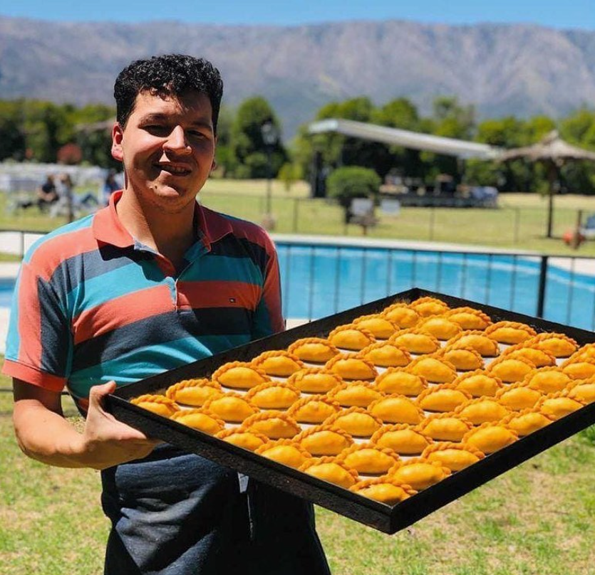
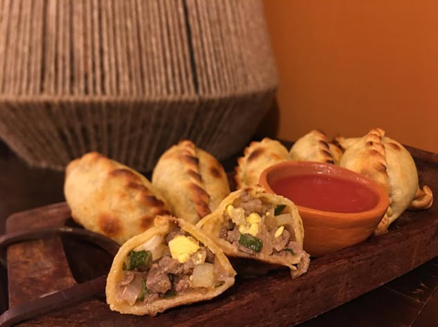
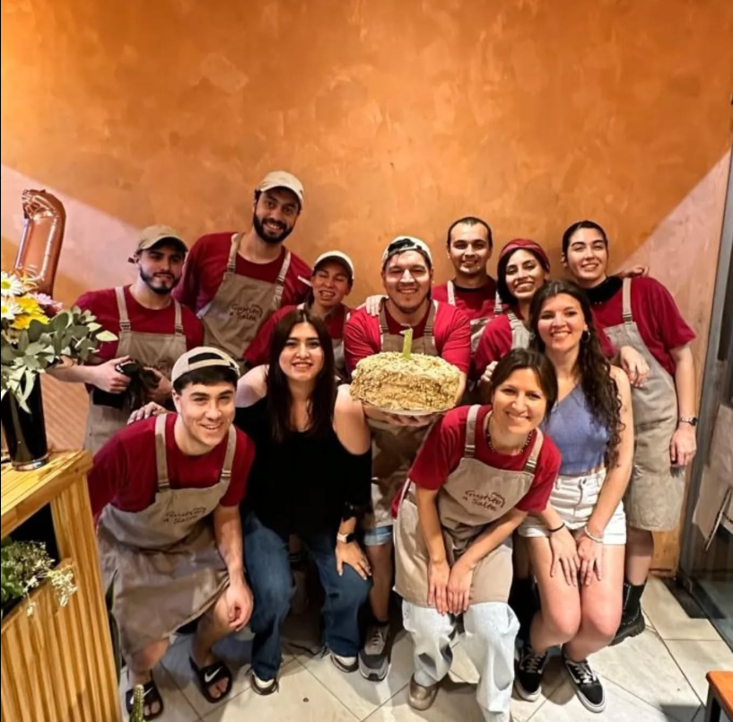
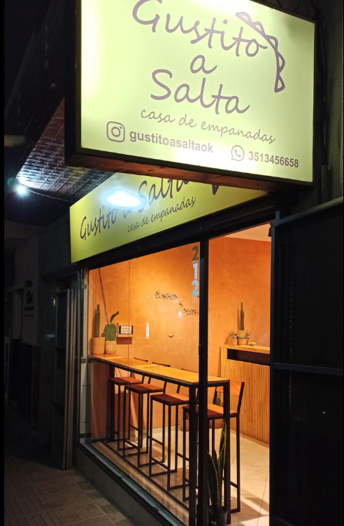

En Gustito a Salta, la pasión por la gastronomía nos une como familia y nos impulsa a llevar los auténticos sabores de nuestra tierra a cada rincón de Córdoba. Este emprendimiento nació en plena pandemia como un sueño mío, Tomás Adad, un joven salteño que, junto a mis 10 hermanos, compartimos un profundo amor por la cocina tradicional.
Desde pequeños, crecimos entre aromas y recetas que pasaron de generación en generación, combinando lo mejor de la gastronomía regional salteña con los secretos de la cocina árabe, reflejo de nuestras raíces y tradiciones. Ese legado fue el motor que nos llevó a transformar nuestra pasión en un proyecto real, que comenzó como un pequeño emprendimiento y hoy se materializa en nuestro local físico, ubicado en el corazón de Nueva Córdoba, barrio Güemes.
En Gustito a Salta, nuestra misión es ofrecer una experiencia gastronómica auténtica, con el sabor casero y la calidez de la comida hecha con amor. Nuestras empanadas, con su característico repulgue y el inconfundible sabor salteño, son solo el comienzo de un menú que busca acercar la esencia de nuestra provincia a cada cliente.
Hoy seguimos creciendo, con el firme compromiso de brindar no solo comida, sino un pedacito de Salta en cada bocado. Agradecemos a cada persona que nos elige y nos permite compartir nuestra historia a través de nuestros sabores.
¡Los esperamos para disfrutar de lo mejor de Salta en Córdoba!